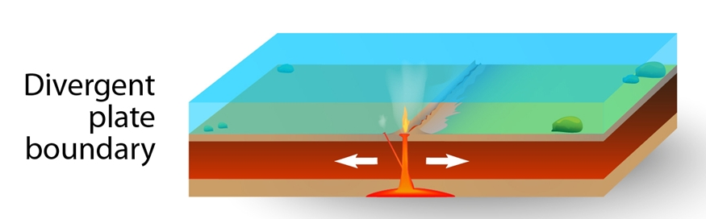
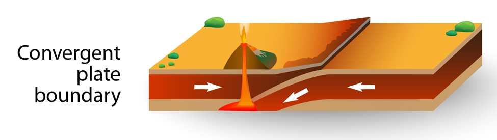
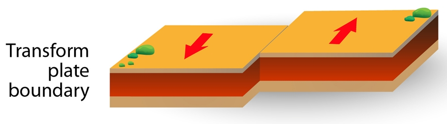
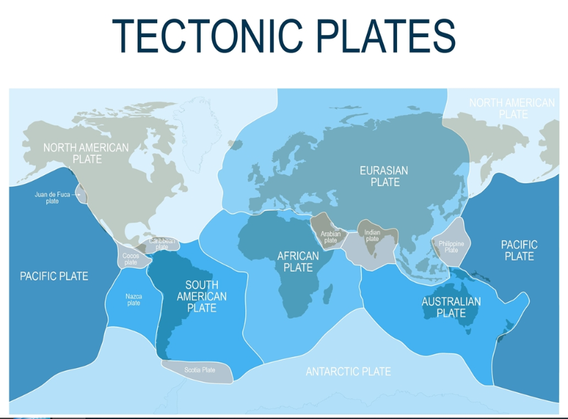

จุดประสงค์
อธิบายสาเหตุ และกระบวนการเคลื่อนที่ของแผ่นธรณี และระบุผลที่เกิดจากการเคลื่อนที่ของ แผ่นธรณี
อธิบายสาเหตุ และกระบวนการเคลื่อนที่ของแผ่นธรณี และระบุผลที่เกิดจากการเคลื่อนที่ของ แผ่นธรณี
ในอดีตการวางตัวของแผ่นเปลือกโลกไม่ได้เป็นเหมือนดังที่เราเห็นบนแผนที่โลกปัจจุบัน แผ่นเปลือกโลกนั้นมีการเคลื่อนที่และเปลี่ยนแปลงอยู่ตลอดเวลา โดยใช้เวลากว่า 150 ล้านปี กว่าจะเป็นดั่งที่เราเห็นทุกวันนี้ ซึ่งเรียกว่า เป็นการแปรสัณฐานของเปลือกโลก
กระบวนการแปรสัณฐานของเปลือกโลก (Plate Tectonic)
โลกของเราประกอบไปด้วยแผ่นเปลือกโลกทวีป และแผ่นเปลือกโลกมหาสมุทร โดยแผ่นเปลือกโลกเหล่านี้มีการเคลื่อนที่อยู่ตลอดเวลา อีกทั้งยังมีการเคลื่อนที่ได้หลายทิศทาง ซึ่งการเคลื่อนที่ของแผ่นเปลือกโลกนี้ ทำให้เกิดลักษณะภูมิประเทศต่าง ๆ เช่น ภูเขา ทะเล มหาสมุทร เป็นต้น ทั้งนี้การที่แผ่นเปลือกโลกมีการเคลื่อนตัวนั้นเกิดจากการเคลื่อนตัวของแมกมา (Magma) ที่อยู่ใต้ชั้นเปลือกโลกตามทฤษฎีการพาความร้อน (Convention current theory) ทำให้เกิดการเคลื่อนตัวของทวีปต่าง ๆ ตามมา จนกลายเป็นลักษณะของแผนที่โลกที่เราเห็นในปัจจุบัน
ลักษณะการเคลื่อนที่ของแผ่นเปลือกโลก
ลักษณะการเคลื่อนที่ของแผ่นเปลือกโลก มีอยู่ 3 แบบ คือ
1. แผ่นธรณีเคลื่อนที่ออกจากกัน (Divergent boundary)

แผ่นธรณีภาคเคลื่อนที่ออกจากกันเนื่องจากการดันตัวของแมกมาออกมาภายนอกเปลือกโลกตามรอยแยก ทำให้แผ่นเปลือกโลกเคลื่อนออกจากกัน ซึ่งการเคลื่อนตัวนี้ส่งผลให้เกิดแผ่นดินไหวได้ โดยการเคลื่อนตัวออกจากกัน มี 2 รูปแบบคือ
1.1 การเคลื่อนที่แยกออกจากกันของแผ่นเปลือกโลกทวีป การเคลื่อนที่ออกจากกันของแผ่นเปลือกโลกทวีปทั้งสองแผ่น จะทำให้เกิดรอยแยกขนาดใหญ่และเกิดทรุดตัวกลายเป็นหุบเขาทรุด (Rift Valley) และกลายเป็นทะเลขนาดเล็ก เช่น ทะเลแดง ทะเลสาบมาลาวี
1.2 การเคลื่อนที่แยกออกจากกันของแผ่นเปลือกโลกมหาสมุทร การเคลื่อนที่แยกออกจากกันของแผ่นเปลือกโลกมหาสมุทร ทำให้เกิดสันเขาใต้มหาสมุทร (Mid Ocean Ridge) แมกมาหรือหินหนืดมีการดันตัวขยายแผ่นเปลือกโลกออกด้านข้างส่งผลให้พื้นที่ของมหาสมุทรขยายตัวขึ้นด้วย
2. แผ่นธรณีเคลื่อนที่เข้าหากัน (Convergent boundary)

การเคลื่อนที่ของแผ่นเปลือกโลกชนกันมีผลทำให้เกิดแผ่นดินไหวอย่างรุนแรง และหากเกิดในมหาสมุทรอาจทำให้เกิดสึนามิได้ การที่แผ่นธรณีเคลื่อนที่เข้าหากัน มีอยู่ 3 ลักษณะ คือ
2.1 แผ่นเปลือกโลกมหาสมุทรชนกัน การที่แผ่นธรณีมหาสมุทรชนกันนั้น แผ่นเปลือกโลกมหาสมุทรที่มีอายุมากกว่า มีความหนาแน่นมากกว่า จะมุดตัวลงด้านล่าง บริเวณนั้นเรียกว่า ร่องลึกมหาสมุทร (Mid oceanic trench) ซึ่งแผ่นเปลือกโลกชั้นบนจะเกิดการหลอมเหลวกลายเป็นหินหนืดและดันผิวโลก เกิดเป็นเกาะต่าง ๆ ตามแนวร่องลึกมหาสมุทร เกาะส่วนใหญ่จะเป็นเกาะที่มีภูเขาไฟ เช่น เกาะญี่ปุ่น เกาะฟิลิปปินส์ ดังนั้น จะสังเกตว่าประเทศเหล่านี้ตั้งอยู่ระหว่างแผ่นเปลือกโลก และมักเกิดแผ่นดินไหวเกิดขึ้นบ่อยครั้ง
2.2 แผ่นเปลือกโลกทวีปชนกัน การที่แผ่นเปลือกโลกทวีปชนกัน แผ่นเปลือกโลกที่มีความหนาแน่นมากกว่าจะมุดตัวลงด้านล่าง ส่วนแผ่นเปลือกโลกที่มีความหนาแน่นน้อยกว่าจะยกตัวขึ้น กลายเป็นเทือกเขาสูง เช่น เทือกเขาหิมาลัย ประเทศเนปาล เทือกเขานี้ยังมีการเคลื่อนที่ชนกันอยู่ตลอดเวลาของขอบทวีประหว่างอินเดียและทวีปเอเชีย ซึ่งทุก ๆ ปี จะมีความสูงเพิ่มขึ้นแต่เพียงเล็กน้อยเท่านั้น
2.3 แผ่นเปลือกโลกมหาสมุทรชนกับแผ่นเปลือกโลกทวีป แผ่นเปลือกโลกมหาสมุทรมีความหนาแน่นมากกว่าแผ่นเปลือกโลกทวีป ดังนั้น เมื่อเกิดการชนกัน แผ่นเปลือกโลกมหาสมุทรจะจมตัวลง ขณะที่แผ่นเปลือกโลกทวีปจะยกตัวขึ้นกลายเป็นภูเขาสูงริมชายฝั่งทะเล เช่น เทือกเขาแอนดีส บริเวณชายฝั่งตะวันตกของทวีปอเมริกาใต้ เป็นต้น
3. แผ่นธรณีเคลื่อนที่ผ่านกัน (Transform boundary)

เมื่อแผ่นเปลือกโลกเคลื่อนที่สวนกัน จะทำให้เกิดรอยเลื่อนขนาดใหญ่และอาจทำให้เกิดแผ่นดินไหวอย่างรุนแรงได้ การเคลื่อนที่สวนกันของแผ่นเปลือกโลกที่เป็นที่รู้จัก เช่น รอยเลื่อนซานแอนเดรีย ในรัฐแคลิฟอเนีย ประเทศสหรัฐอเมริกา การเคลื่อนที่ของเปลือกโลกลักษณะต่าง ๆ ล้วนทำให้เกิดลักษณะภูมิประเทศที่แตกต่างกันออกไป ทั้งนี้นอกจากทำให้เกิดลักษณะภูมิประเทศแล้ว ยังส่งผลให้เกิดภัยธรรมชาติตามมาด้วย เช่น แผ่นดินไหว ภูเขาไฟระเบิด หรือการเกิดสึนามิ
ปัจจุบันแผ่นเปลือกโลกที่มีขนาดใหญ่ ๆ บนแผนที่โลก มีอยู่ 9 แผ่น ได้แก่ แผ่นอเมริกาเหนือ แปซิฟิก ยูเรเชีย แอฟริกา อินโด-ออสเตรเลีย ออสเตรเลีย อินเดีย อเมริกาใต้ และแอนตาร์กติกา โดยแผ่นเปลือกโลกที่มีขนาดใหญ่ที่สุดคือ แผ่นแปซิฟิก ซึ่งมีขนาด 103 ล้านตารางกิโลเมตร ส่วนใหญ่อยู่บริเวณใต้มหาสมุทร และเคลื่อนที่ไปในทิศตะวันตกเฉียงเหนือด้วยความเร็วประมาณ 7 เซนติเมตรต่อปี

Licensed under the Creative Commons Attribution Share Alike License 4.0